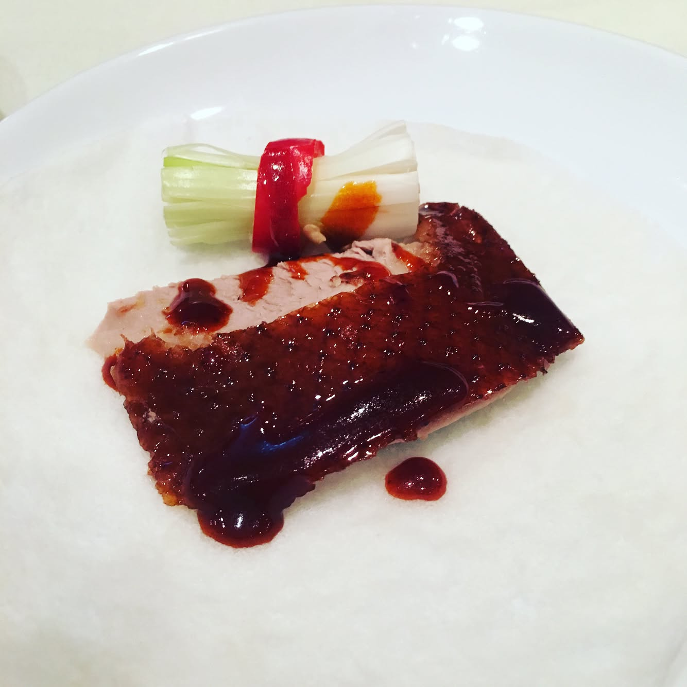

Taste of Hong Kong 🇭🇰 love this city and it's amazing food. Lei Garden is one of the iconic Hong Kong restaurants popular for its duck dishes and hearty soups ☺️👌🏼 ---- #triathlon #ironmantri #healthyfood #sportnutrition #running #swimbikerun #dietfood #cervelo #orbea #specializedbikes #giantbikes #canyonbikes #bmcbikes #boardmanbikes #ironmantraining #marathontraining #trailrunning #marathon #leigarden #hongkongfood
2017-05-23 00:29:32
Back to main page